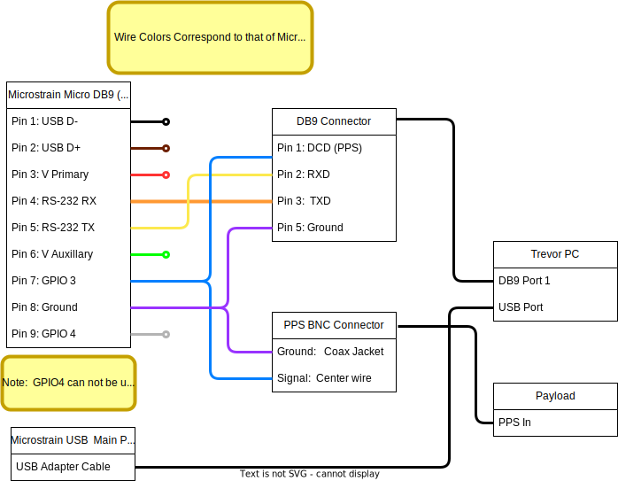
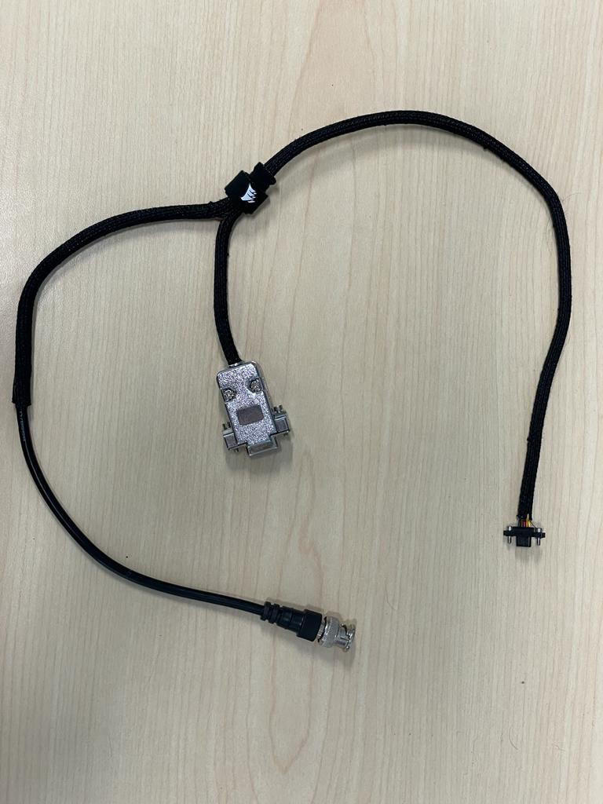

About
Trevor uses a Lord Microstrain 3DM-GQ7. It is a fully integrated navigation solution including an RTK GPS solution with GPS heading and a full EKF filtered solution. 
Powering
USB Power is the preferred means of powering the 3DM-GQ7 aboard TREVOR. USB power has several advantages over direct power for our application:
- USB power is simple to wire and has minimal risk of electrical damage to the unit
- The USB connection can be used on the "MAIN" port instead of a serial connection to facilitate the maximum possible data rates.
- USB power is regulated by the device powering it. This way the 3DM-GQ7's will be powered on/off with the onboard computer thus preventing unnecessary uptime.  
- Warning
- It is unsafe to power the device from multiple sources! Do not connect 2 USB connections to different hosts (computers). For additional details see the powering document from microstrain.
Wiring
- The "MAIN" port should be connected through the "[USB Cable Kit for AHRS/IMU](https://www.mouser.com/ProductDetail/LORD-Microstrain/USB-Cable-Kit-for-AHRS-IMU?qs=sGAEpiMZZMv0DJfhVcWlK5aFAr7S0qM3xYSZm%252BchY8P6Mfa77UUN2A%3D%3D)" directly to the onboard computer aboard TREVOR.
- The "AUX Port should be connected a <a href="https://www.mouser.com/ProductDetail/LORD-Microstrain/MICRO-DB9-LEADS?qs=sGAEpiMZZMv0DJfhVcWlK5aFAr7S0qM3tjIW1RAJLPR9gbnQxPldDg%3D%3D" >MICRO DB9/LEAD</a>
* a custom cable MicroDB9 to DB9 with PPS breakout cable must be produced according to the schematic below
<table class="markdownTable">
<tr class="markdownTableHead"> <th class="markdownTableHeadCenter">
A schematic showing the complete wiring diagram for the Microstrain 3DM-GQ7 to TREVOR interface

|
| A completed version of the microstrain interface cable |
ROS2 Microstrain Inertial Driver Hardware Configuration
Below are the minimum configurations needed to physically interface with the 3DM-GQ7. Note that this configuration does not account for any Navigation or messaging setup, only the physical hardware interface related to the wiring schematic.
port : /dev/ttyACM0 # main Port
aux_port : /dev/ttyS0 # aux port for RTK corrections (assumes the DB9 port is connected to serial port 1)
baudrate : 115200 # Baudrate to send data (Microstrain default)
gpio_config : True
gpio3_feature : 2 # 2 for pps
gpio3_behavior : 2 # 2 for output
gpio3_pin_mode : 0 # 0 not needed for PPS